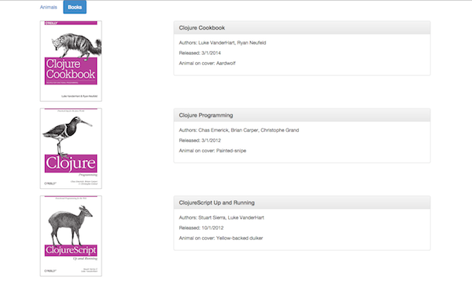
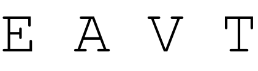

Schedule
- Intro (10 m.)
- Clojure crash course (20 m.)
- REST API (10+20 m.)
- User interface (10+20 m.)
- Database (10+20 m.)
Presenter Notes
Clojure

Presenter Notes
Immutable Stack
Engineered:
- Noir
- Pedestal
Evolutionary:
- Ring, Compojure, Liberator, Hiccup (2009)
- Funding, books, conj (2010)
- ClojureScript (2011)
- Datomic (2012)
- core.async (2013)
- Om, Reagent (2014)
Presenter Notes
Examples @ Finalist
- Matchmaker
- Lipton
Presenter Notes
Clojure crash course
Presenter Notes
Clojure crash course
REPL
-
Interactive development: Read Eval Print Loop
1 user=> <- prompt
-
Start one by
lein replor in IntelliJ
Presenter Notes
Clojure crash course
In the REPL we will cover the following basics:
- Clojure basics and special forms
- if
- let
- function call
- function definition
Presenter Notes
Clojure crash course
If
1 (if (< (rand-int 10) 5)
2 "Smaller than 5"
3 "Greater or equal than 5")
Presenter Notes
Clojure crash course
Let
1 (let [x (+ 1 2 3)
2 y (+ 4 5 6)
3 z (+ x y)]
4 z) ;;=> 21
Presenter Notes
Clojure crash course
Function call
1 (inc 1) ;;=> 2
instead of
1 inc(1) // 2
It is called prefix notation
Presenter Notes
Clojure crash course
Function definition
1 (def my-fun (fn [x]
2 (+ x 2)))
3
4 ;; same as:
5 (defn my-fun [x]
6 (+ x 2))
Presenter Notes
Clojure crash course
Literals, symbols and keywords
1 1 ;; integer literal
2 "foo" ;; string literal
3 'foo ;; quoted symbol
4 foo ;; symbol (will evaluate to value bound to foo)
5 :foo ;; keyword, more or less a constant, often used as key in hashmap
6 {:a 1, :b 2} ;; map literal
Presenter Notes
Clojure crash course
-
Clojure collections
- vectors
- maps
- lists
- sets
-
Functions on data structures
Presenter Notes
Clojure crash course
Vectors
1 (def v1 (vector 1 2 3 4))
2 (def v2 [1 2 3 4])
3 (= v1 v2) ;; true
4 (get v1 0) ;; 1
5 (get v1 3) ;; 4
6 (get v1 4) ;; nil
7 (v1 0) ;; 1
8 (v1 3) ;; 4
9 (conj v1 5) ;; [1 2 3 4 5]
Presenter Notes
Clojure crash course
Maps
1 (def m1 {:a 1 :b 2})
2 (get m1 :a) ;; 1
3 (get m1 :b) ;; 2
4 (m1 :a) ;; 1
5 (:a m1) ;; 1
6 (:c m1) ;; nil
7 (assoc m1 :c 3) ;; {:c 3, :b 2, :a 1}
Presenter Notes
Clojure crash course
Lists. Used mostly for representing code (for example in macros).
1 (def expr (list 'println 1 2 3)) ;; (println 1 2 3), unevaluated
2 (eval expr) ;; prints 1 2 3, normally we don't do this
3 (conj (list 1 2 3) 4) ;; (4 1 2 3)
Presenter Notes
Clojure crash course
Sets
1 (def s1 #{1 2 3})
2 (contains? s1 1) ;;=> true
3 (contains? s1 4) ;;=> false
4 (conj s1 4) ;;=> #{1 2 3 4}
5 (disj s1 3) ;;=> #{1 2}
Presenter Notes
Sequence abstraction
Clojure collections implement a sequence interface, so you can apply general sequences functions.
Examples: first, rest, map, filter, remove.
1 (def v1 [1 2 3 4])
2 (first v1) ;; 1
3 (rest v1) ;; (2 3 4)
4 (map v1 inc) ;; (2 3 4 5)
5 (filter v1 odd?) ;; (1 3)
6 (remove v1 odd?) ;; (2 4)
Presenter Notes
Mutable state
Atoms are mutable references to immutable values.
One of 4 kinds of mutable references in Clojure.
Pure functions are used to atomically transform immutable value stored in reference.
1 (def game-state (atom {:score 0}))
2
3 (defn increase-score [old-state points]
4 (update-in old-state [:score] + points))
5
6 ;; test:
7 (increase-score {:score 40} 20) ;;=> {:score 60}
8
9 (defn score! []
10 (swap! game-state increase-score 20))
11
12 @game-state ;;=> {:score 0}
13 (score!)
14 @game-state ;;=> {:score 20}
15 (score!)
16 @game-state ;;=> {:score 40}
Presenter Notes
Clojure crash course
Use the Clojure cheat sheet
Presenter Notes
REST API
Presenter Notes
REST API
- Ring: HTTP abstraction
- Compojure: routing
- Liberator: expose data as resources
- Various libs: resource representations
Presenter Notes
Ring
- HTTP abstraction library
- Inspired by WSGI (Python) and Rack (Ruby)
- Represents requests and responses as maps
- SPEC
- Middleware
Example:
1 (defn handler [req]
2 {:status 200
3 :body "{:a 1, :b 2}"
4 :headers {"Content-Type" "application/edn"})
5
6 (defn run-server []
7 (run-jetty #'handler {:port 8080}))
Presenter Notes
Compojure
- Routing library for Ring
- Specific destructuring
Example:
1 (defroutes main-routes
2 (GET "/" [] (index-page))
3 (GET "/animals/:id" [id]
4 (find-animal id))
5 (route/resources "/")
6 (route/not-found "Page not found"))
7
8 (def app
9 (-> (handler/site main-routes)
10 (wrap-base-url)))
Presenter Notes
Liberator
- Library for exposing data as resources
- Compliant with relevant requirements of HTTP specification RFC-2616
- Inspired by Erlang Webmachine
Example:
1 (defresource hello-world
2 :available-media-types ["text/plain"]
3 :handle-ok "Hello, world!")
{kind=link}
Presenter Notes
Representations
- EDN
- Cheshire, clj-json
- data.xml
- Hiccup
Presenter Notes
Putting it all together
Code example from api.clj
Presenter Notes
Assignments
- We'll use an example project to work on.
- Follow the instructions in the README if you haven't yet setup a Clojure environment.
- We have USB-sticks with IntelliJ + Cursive for Mac, Linux and Windows
- Each assignment is based on a git branch and can be worked on independently
- The answers are provided in the example's master branch
Presenter Notes
Assignment 1
$ git checkout rest-api
Add endpoints / liberator resources to api.clj
- GET
- all books
- one specific book
- POST
- a new book
- DELETE
- a book
- PUT
- to change book details
Test it with curl, browser or other REST client
Presenter Notes
User interface
Presenter Notes
User interface
- Clojurescript
- Clojure compiled to javascript
-
React
- V of MVC
- Component based
- Components can have props and inner state
- Virtual DOM
-
ClojureScript abstractions
- Om
- Reagent
Presenter Notes
ClojureScript abstractions
Om
- Opinionated library by David Nolen
- App-state based on one atom
- Cursor based access (kind of a functional lens / zipper)
- Components can access shared state, app state or local state
- Communication between components via app-state, handlers or core.async
- Explicit hooks to React lifecycle
- Follows React semantics closely (e.g. local state changes cause re-rendering)
See examples
Presenter Notes
ClojureScript abstractions
Reagent
- Minimalistic ClojureScript interface to React
- State is saved in RAtom, like clojure.core/atom, but keeps track of derefs
- Components can deref RAtom and will be re-rendered when RAtom changes
- Less verbose than Om
- You can hook to React lifecycle, but often don't need to
See examples
Presenter Notes
Assignment 2
$ git checkout user-interface
Implement the following user story.
When user clicks on button with text "Books" a screen will appear that lists all books with:
- cover
- title
- authors
- release data
- animal on cover
The screen could look like the example in the next slide.
Presenter Notes
Example book screen

Presenter Notes
Database
Presenter Notes
Datomic: deconstructing the database
relations | objects => facts
Information Model
place | time => values
State Model
client | server => peers
Distribution Model
reads | writes => reaction
Coordination Model
Presenter Notes
Information Model
- Traditional: relations vs. objects, impedance mismatch

- Datomic: facts, EAVT, Datoms - combined with a declarative, relational query language to store and retrieve those facts (no SQL by the way)
Presenter Notes
State Model
- Traditional: update in place, contention, "the basis problem"

- Datomic: Accretion of immutable facts, the database as an expanding value, otherwise: excision
Presenter Notes
Distribution Model
- Traditional: Client-server, partitions between service providers and service requesters

- Datomic: Peers and Storage, and Transactors too, empower applications by coordinating change and storage
Presenter Notes
Coordination Model
Deconstructing the Coordination Model
- Traditional: heavy coordination for reads and writes, need to poll for novelty

- Datomic: splits "perception" (reads) and "process" (writes), reactive - not polling
Presenter Notes
Datalog in 6 minutes
Presenter Notes
Query Anatomy
Clojure
1 (q ('[:find ...
2 :in ...
3 :where ...]
4 input1
5 ...
6 inputN))
:where - constraints, :in - inputs, :find - variables to return
Presenter Notes
Variables and Constants
Variables
- ?customer
- ?product
- ?orderId
Constants
- 42
- "john"
- :order/id
- #instant "2012-02-29"
Presenter Notes
Data Pattern: E-A-V
1 -------------------------------------------
2 | entity | attribute | value |
3 -------------------------------------------
4 | 42 | :email | jdoe@example.com |
5 | 43 | :email | jane@example.com |
6 | 42 | :orders | 107 |
7 | 42 | :orders | 141 |
8 -------------------------------------------
Constrain the results returned, binds variables
1 [?customer :email ?email]
-> jdoe@example.com, jane@example.com
1 [42 :email ?email]
-> jdoe@example.com
Presenter Notes
Data Pattern: E-A-V
1 -------------------------------------------
2 | entity | attribute | value |
3 -------------------------------------------
4 | 42 | :email | jdoe@example.com |
5 | 43 | :email | jane@example.com |
6 | 42 | :orders | 107 |
7 | 42 | :orders | 141 |
8 -------------------------------------------
What attributes does customer 42 have?
1 [42 ?attribute]
-> :email, :orders
What attributes and values does customer 42 have?
1 [42 ?attribute ?value]
-> :email - jdoe@example.com, :orders - 107, 141
Presenter Notes
Where Clause
Where to put the data pattern?
1 [:find ?customer
2 :where [?customer :email]]
Implicit Join
1 [:find ?customer
2 :where [?customer :email]
3 [?customer :orders]]
Presenter Notes
Input(s)
1 (q '[:find ?customer :in $ :where [?customer :id] [?customer :orders]]
2 db)
Find using $database and ?email:
1 (q '[:find ?customer :in $ ?email :where [?customer :email ?email]]
2 db "jdoe@example.com")
Presenter Notes
Predicates
Functional constraints that can appear in a :where clause
1 [(< 50.0 ?price)]
Find the expensive items
1 [:find ?item
2 :where [?item :item/price ?price]
3 [(< 50.0 ?price)]]
Presenter Notes
Aggregates
The syntax is incorporated in the :find clause:
1 [:find ?a (min ?b) (max ?b) ?c (sample 12 ?d) :where ...]
The list expressions are aggregate expressions. Query variables not in aggregate expressions will group the results and appear intact in the result.
The included aggregation functions are:
- min, max
- count, count-distinct
- sum, avg, median
- variance, stddev
- rand
Presenter Notes
Functions
1 [(shipping ?zip ?weight) ?cost]
Call functions by binding inputs:
1 [:find ?customer ?product
2 :where [?customer :shipAddress ?address]
3 [?address :zip ?zip]
4 [?product :product/weight ?weight]
5 [?product :product/price ?price]
6 [(Shipping/estimate ?zip ?weight) ?shipCost]
7 [(<= ?price ?shipCost)]]
Or: find me the customer/product combinations where the shipping cost dominates the product cost.
Presenter Notes
Assignment 3
$ git checkout database
Test the datalog queries in webapp.query_test.clj.
You'll also get instructions how to perform the tests and how use the REPL to build your queries, in order to:
- Query by attribute
- Query by attribute with param
- Query with predicates
- Query with joins
- Query with functions